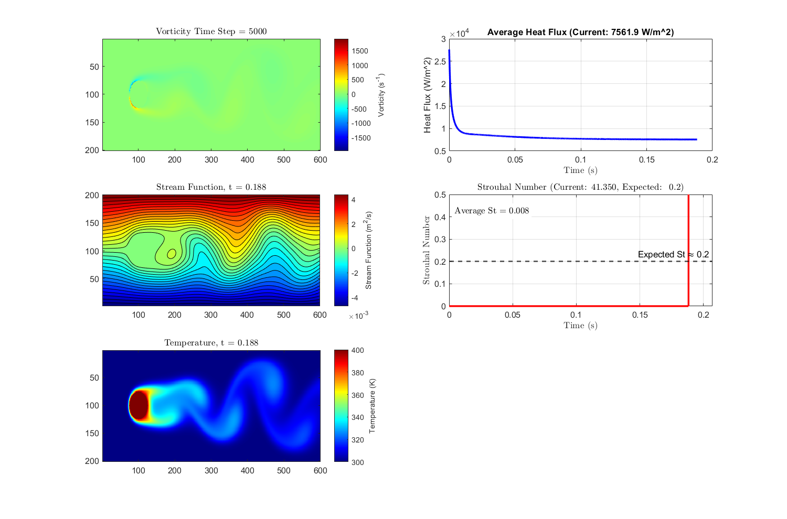
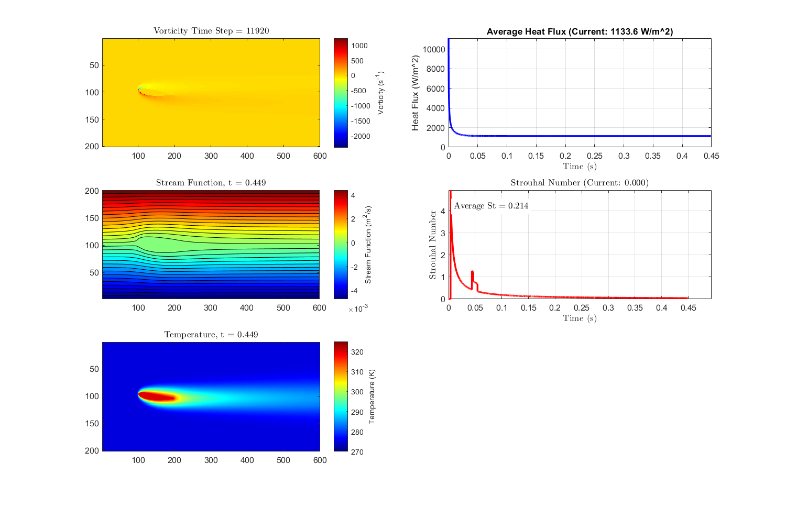
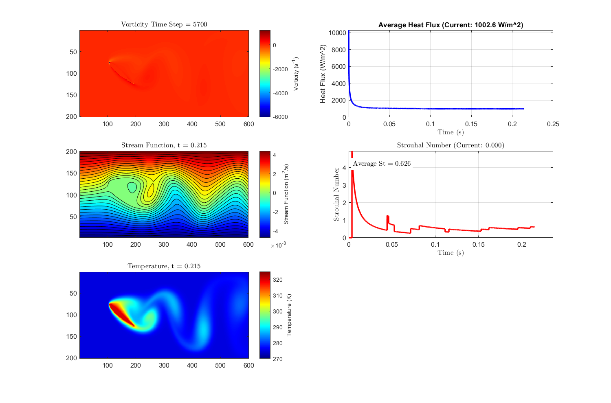

Overview
This project implements a Psi-Omega (streamfunction-vorticity) finite difference numerical simulation from scratch in MATLAB to model 2D unsteady laminar flow and heat transfer. Two geometries were studied: a circular cylinder at 400°C in a 300°C flow field, and a NACA 2412 airfoil (representative of a Cessna 182) at 5° and 30° angles of attack.
For the cylinder, a convective heat flux of 7.6 kW/m² was computed. For the airfoil, heat flux was compared between the two angles of attack (1,002.6 W/m² at 5° vs. 1,133.6 W/m² at 30°).
Technical Approach
The simulation solves three coupled PDEs at each time step:
- Streamfunction (Poisson equation) — solved with Gauss-Seidel iteration and over-relaxation
- Vorticity (momentum equation) — advanced with forward Euler and upwind differencing
- Temperature (energy equation) — coupled to the velocity field from the streamfunction
Upwind differencing stabilizes the advection-dominated flow at higher Reynolds numbers, while Gauss-Seidel with over-relaxation accelerates convergence of the Poisson solve. Each simulation required 3–6 hours of runtime.
Key Results & Validation
Cylinder Flow

Airfoil Analysis
The 5° AoA result was validated against SimFlow CFD software. The 30° AoA simulation shows vortex shedding and stall behavior, with a Strouhal number of St = 0.62, indicating periodic wake dynamics consistent with separated flow.


Technical Challenges & Learning Outcomes
Debugging required 10 iteration cycles for the cylinder and 5 for the airfoil, primarily addressing numerical instability in the vorticity boundary conditions at the cylinder wall and the sharp leading/trailing edges of the airfoil. Correct implementation of the no-slip condition and proper vorticity extrapolation at solid boundaries was critical for stability.